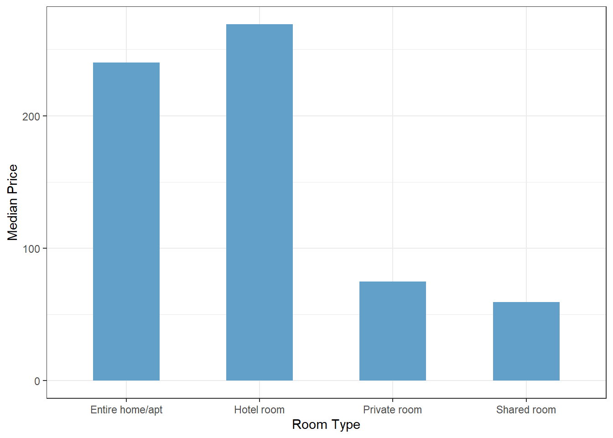

library(tidyverse)
library(plotly)
library(gt)Data Visualization with 
11.118/11.218 Applied Data Science for Cities
Overview
This week, we’ll use real-world data to do an independent, mini visualization project. You’ll practice with data cleaning and visualization, and have more flexibility to use the tools you’ve learned so far to explore questions that you are interested in.
Study Topic
Inside Airbnb is a publicly available dataset built through web scraping of Airbnb’s platform. The website was created by a group of housing activists as a way to bring transparency to the impact of short-term rentals on cities around the world.
The main motivation for compiling this resource is rooted in the tension between the growth of short-term rental platforms and the long-term housing market. Advocates point out that when homes are repurposed for short-term rentals, it pratically reduces the availability of affordable housing, while also driving up rental costs and adding displacement pressure on local communities.
From the Get the Data page on Inside Airbnb, you’ll find datasets covering many cities around the world. Let’s take a closer look at what the data provides and how it can help us better understand the activities and impacts of Airbnb short-term rentals.
Understand the data
As with previous labs, start by creating a working folder for Lab 3 and set up a new R Project inside it. You can experiment with code in a regular R script first. Later, in the Exercise section, we’ll bring everything together by creating a Quarto document to compile your final report.
From the “Get the Data” page, search for Boston. You’ll see a list of files with descriptions under “Boston, Massachusetts, United States”. The first file, listings.csv.gz is “Detailed Listings data”. It contains raw information scraped directly from Airbnb’s website. Download this file into your data folder of your project.
The dataset is provided in .gz format (a compressed file), but fear not, read_csv() is powerful enough to read and decompress it automatically.
airbnb <- read_csv("listings.csv.gz")Let’s look through the 79 variables included in the dataset along with the Data Dictionary. Try to understand what each one means and what it tells you about a property.
While you are browsing, please write down 3-5 questions you are curious about. If you want to explore the activity and impact of short-term rentals in a city, what questions might you ask, and which variables in this dataset could help answer them?
Here are a few ideas to get you started:
Listing type: Inside Airbnb notes that “the majority of Airbnb listings in most cities are entire homes, many of which are rented all year round, disrupting housing and communities”. How many properties in Boston are entire homes in this dataset?
Activity and income: Availability, price, and number of reviews can be used to estimate nights booked in the past 12 months. How many listings are rented frequently, and does Airbnb revenue encourage short-term rentals over long-term housing?
Regulations: Cities often have rules limiting short-term rentals. For example, in Boston, rentals under 28 days are regulated. Can minimum night settings in Airbnb properties inform us any host reponses to local regulations?
Multiple listings per host: Some hosts manage multiple listings, but they are more likely to run a business, may not live in the property, and could be violating short-term rental rules meant to protect housing. A report shows on average, 64% of Airbnb hosts hold multiple local listings. How is the multiple listing situation in Boston?
Use these examples as a guide to draft your own specific questions. In the rest of the tutorial, we’ll work with the Boston dataset to organize some variables and walk through a few visualization examples. But I won’t answer all of these questions. Later, you’ll explore a different city, figure out how to answer your own questions, and use visualizations to present your findings and insights.
Prepare the data
Work with character using stringr
We have have a price variable in the data, but you will find (e.g., with glimpse(airbnb)) that the prices are stored as characters, not numbers.
Converting functions like as.numeric() won’t work directly here because the prices include a dollar sign ($) and commas, like this: “$1,200,000”. We first need to modify the strings to remove the dollar signs and commas, before we can convert them to numeric prices and calculate them.
The stringr package, which is part of the tidyverse, specializes in working with strings (i.e., text or character data). In general, we can use it to replace certain symbols with an empty string (““), effectively removing them from our data.
str_replace(string = "$1,200", pattern = ",", replacement = "") [1] "$1200"Or if use str_replace_all(), it can detect and remove multiple symbols simultaneously, by wrapping them in brackets
str_replace_all(string = "$1,200.00", pattern = "[$,]", replacement = "")[1] "1200.00"Here we make a small dataset focusing on property types and price, then clean up the price representations:
df_price <- airbnb |>
select(id, room_type, price) |>
mutate(price = str_replace_all(string = price,
pattern = "[$,]",
replacement = "")) |>
mutate(price = as.numeric(price))There are four unique types of room types:
unique(df_price$room_type)[1] "Entire home/apt" "Private room" "Shared room" "Hotel room" Then we can create a bar chart that displays the median price for each type of property.
df_price |>
filter(price < 10000) |>
group_by(room_type) |>
summarise(median_price = median(price, na.rm = TRUE)) |>
ggplot() +
geom_col(aes(x = room_type, y = median_price),
fill = "#62A0CA", width = 0.5) +
theme_bw()+
labs(x = "Room Type", y = "Median Price")
Note: Check what that filter line does. Why is it included? If you were conducting this analysis, would you use it?
We have talked about plotly and its ggplot2 integration in class. We can easily turn a static graph into an interactive plot using ggplotly().
g <- df_price |>
filter(price < 10000) |>
group_by(room_type) |>
summarise(median_price = median(price, na.rm = TRUE)) |>
ggplot() +
geom_col(aes(x = room_type, y = median_price),
fill = "#62A0CA", width = 0.5) +
theme_bw()+
labs(x = "Room Type", y = "Median Price")
g |> ggplotly()Working with dates using lubridate
The Airbnb dataset includes several date-related columns, such as host_since. From glimpse(airbnb), we can see that these columns are already stored as date variables.
The lubridate package is commonly used for 1) converting text data into date formats, and 2) extracting components from dates, such as year, month, or day.
Let’s make another smaller dataset that includes the listing ID and when the host was first listed (host_since). We can extract the year from it for further analysis. So that you can see how many hostes started in each year.
df_since <- airbnb |>
select(id, host_since) |>
mutate(host_since_year = year(host_since)) ggplotly() is easy for us to use, and saves us from having to learn a new set of plotly grammar. However, for certain chart types, like pie charts or donut charts, plotly’s native functions can be simpler to work with directly.
Similarly to ggplot, you initiate a plotly graph by calling plot_ly() (notice the _ is needed). Then, map the appropriate columns to the correct arguments, specifying which values to plot and which labels should be displayed.
df_since |>
count(host_since_year) |>
plot_ly(
labels = ~host_since_year,
values = ~n,
type = "pie",
hole = 0.5 # the size of the "hole", which practically turn a pie into a donut
)Although, a donut chart might not be the best choice for this particular question, since it can become visually cluttered when there are too many segments. Check out the “treemap” instead:
df_since |>
count(host_since_year) |>
plot_ly(
labels = ~host_since_year,
values = ~n,
type = "treemap",
parents = "" # No hierarchy, just one level
)Create nicer tables using gt
Not just for graphs, many R packages can help you create professional and stylish tables. gt is one such package, and it integrates very smoothly with tidyverse syntax.
Suppose I’m planning a trip to Boston and want to stay in the “Allston” neighborhood. I decide to dig into the Airbnb dataset to find hosts who have both good ratings and are actively getting reviews.
In the following code, I begin by identifying relevant variables and then pulled out another small dataset. Next, I calculate how many reviews each host has received in the last 30 days, along with their average ratings.
df_review <- airbnb |>
select(id, host_id, host_name, neighbourhood_cleansed,
number_of_reviews_l30d, review_scores_rating)
top_reviewed_hosts <- df_review |>
filter(neighbourhood_cleansed == "Allston") |>
group_by(host_id, host_name) |>
summarise(num_review = sum(number_of_reviews_l30d),
avg_rating = mean(review_scores_rating, na.rm = TRUE),
.groups = "drop") |>
# arrange by number of reviews and show the top 10
arrange(desc(num_review)) |>
head(10)
top_reviewed_hosts# A tibble: 10 × 4
host_id host_name num_review avg_rating
<dbl> <chr> <dbl> <dbl>
1 15154687 Taskin 31 4.73
2 47584294 Jessy And Diego 16 4.86
3 307979339 Aziz 14 4.56
4 18409308 Marlene 10 4.99
5 26956083 Todd 10 4.81
6 657106909 Wenjia 8 4.25
7 10250028 Mingzhou 7 4.92
8 147418936 Dana And Andrew 6 4.5
9 194167208 Reina 6 4.92
10 757253 Lee 5 4.93Just like ggplotly(), gt is also one line away to make a table more formatted:
top_reviewed_hosts |> gt()| host_id | host_name | num_review | avg_rating |
|---|---|---|---|
| 15154687 | Taskin | 31 | 4.728571 |
| 47584294 | Jessy And Diego | 16 | 4.860000 |
| 307979339 | Aziz | 14 | 4.560000 |
| 18409308 | Marlene | 10 | 4.986667 |
| 26956083 | Todd | 10 | 4.810000 |
| 657106909 | Wenjia | 8 | 4.250000 |
| 10250028 | Mingzhou | 7 | 4.920000 |
| 147418936 | Dana And Andrew | 6 | 4.500000 |
| 194167208 | Reina | 6 | 4.915000 |
| 757253 | Lee | 5 | 4.932500 |
To make this table even clearer, I can use gt to add colorization based on column values. The following code may look long at first, but you can read it step by step: it first renames the columns for presentation (rename), then send it to gt(), sets up the table titles (tab_header), followed by applying the color range to the “average rating” column (data_color), and then applies the color range to the “number of reviews” column (data_color).
top_reviewed_hosts |>
rename(
`Host ID` = host_id,
`Host Name` = host_name,
`# Reviews` = num_review,
`Rating` = avg_rating
) |>
gt() |>
tab_header(
title = "Top Reviewed Airbnb Hosts in the last 30 Days",
subtitle = "Allston, Boston") |>
data_color(
columns = Rating,
fn = scales::col_numeric(
palette = c("white", "red"),
domain = range(top_reviewed_hosts$avg_rating)
)) |>
data_color(
columns = `# Reviews`,
fn = scales::col_numeric(
palette = c("white", "red"),
domain = range(top_reviewed_hosts$num_review)
)
)| Top Reviewed Airbnb Hosts in the last 30 Days | |||
|---|---|---|---|
| Allston, Boston | |||
| Host ID | Host Name | # Reviews | Rating |
| 15154687 | Taskin | 31 | 4.728571 |
| 47584294 | Jessy And Diego | 16 | 4.860000 |
| 307979339 | Aziz | 14 | 4.560000 |
| 18409308 | Marlene | 10 | 4.986667 |
| 26956083 | Todd | 10 | 4.810000 |
| 657106909 | Wenjia | 8 | 4.250000 |
| 10250028 | Mingzhou | 7 | 4.920000 |
| 147418936 | Dana And Andrew | 6 | 4.500000 |
| 194167208 | Reina | 6 | 4.915000 |
| 757253 | Lee | 5 | 4.932500 |
Once I identify the 10 hosts who received the most reviews in the last 30 days, along with their average ratings, I get a better sense of who are most likely to offer the best guest experience.
A note on data organization: combining datasets
When exploring a dataset, we often work with a few variable combinations and may create several smaller datasets for convenience. At some point, we might want to bring two pieces back together.
To make this possible, we’ve intentionally kept an identifiable variable (id, in our case) in all these small datasets. This allows us to combine them using left_join(). The left_join() function merges two datasets by a shared key column, keeping all rows from the left and adding any matching rows from the right.
df <- left_join(df_price, df_since, by = "id")Find resources and learn more
So far, we’ve introduced you to many different functions, arguments, and ways to accomplish visualization tasks in R. You might be wondering: how will I remember all of this? Is there a pool of resources I can rely on?
A general guide on where to find help and inspiration:
Your own experience. Everything you’ve done so far counts as a resource. The code you’ve written, the research you’ve done, and the exploration you’ve carried out to make your code work all build into your personal knowledge and intuition.
R help functions and documentation. Don’t forget that R has built-in help. Use
?function_name to get details on any function. R cheat sheets are also extremely handy for quick reference.Graphing libraries and galleries. Packages like ggplot2 and plotly come with galleries of examples, complete with code. By now, you should be able to read and modify much of this code to fit your own needs.
Community examples and published code snippets. If you come across someone else’s work that serves as a good example, take time to study the code, understand how it works, and consider how you might adapt it for your own project.
Lab Report
This week you’ll do a preliminary Airbnb data study on a city of your choice. We will work in a Quarto document, so your narrative, code, and outputs are all organized in one place. You’ll start by revisiting the questions you drafted earlier, then use visualizations to explore and answer them.
What to do:
Choose a city. Please avoid Boston this time. Pick another city from the list. This could be your hometown or a tourist destination you’re interested in.
Finalize 3 questions to guide your study. You may find yourself revisiting or adjusting your draft questions, that’s perfectly fine. Refine them as you go.
Create at least one visualization (graph or table) to answer each question.
You will probably work through this in two phases:
Phase 1: Explore the dataset. See what variables are useful for you, how they are distributed, and whether there are any data quality issues or surprising relationships. Do some quick checks for completeness and consistency.
Phase 2: Investigate each of your three questions. Start with an initial visualization, then refine it (e.g., add colors, adjust scales, filter or subset data). Use this process to deepen your insights. As you work, new questions may come up. Feel free to follow them with additional visualizations until you feel satisfied with your understanding.
Write explanatory text to describe your intentions, methods, and findings for each of the three questions.
Submit a report that reflects your thoughtful coding and clear storytelling.
We are not looking for the “right answer,” and there may not be answer keys for your specific questions. The goal is for you to apply what we’ve practiced: using visualizations, adapting code to new problems, and demonstrating your critical thinking on a certain topic. We will use “Lab 3 Rubric” posted on Canvas for grading this report, and your work will be carefully read for thoughtful analysis and clear communication.
Submission
Please complete your Quarto document and upload your rendered HTML file to Canvas by 9am, Wednesday, Oct 1.